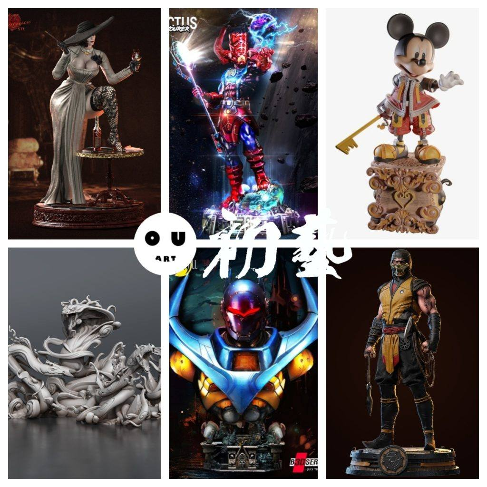
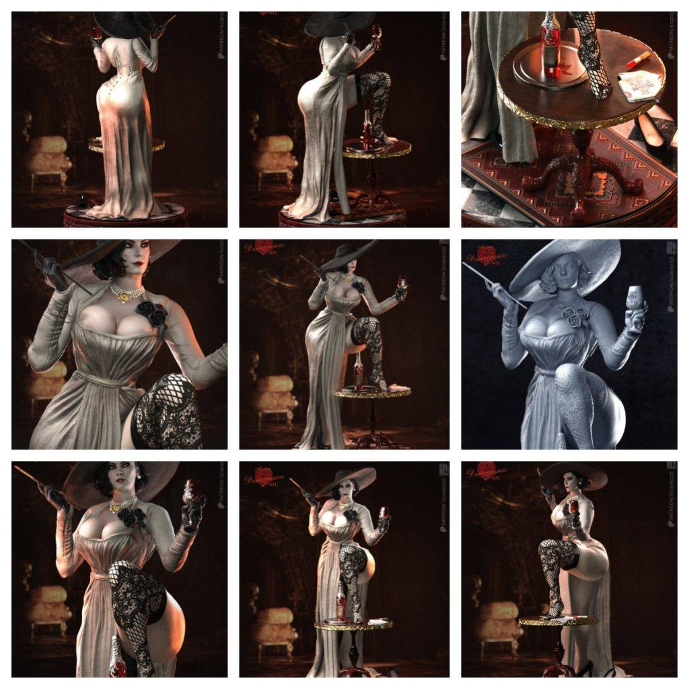
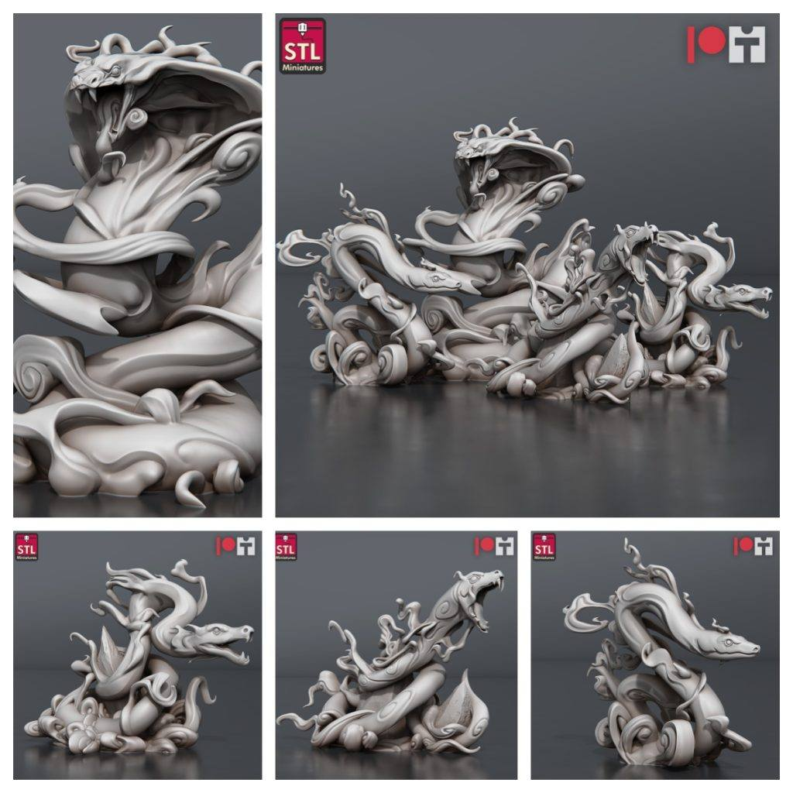
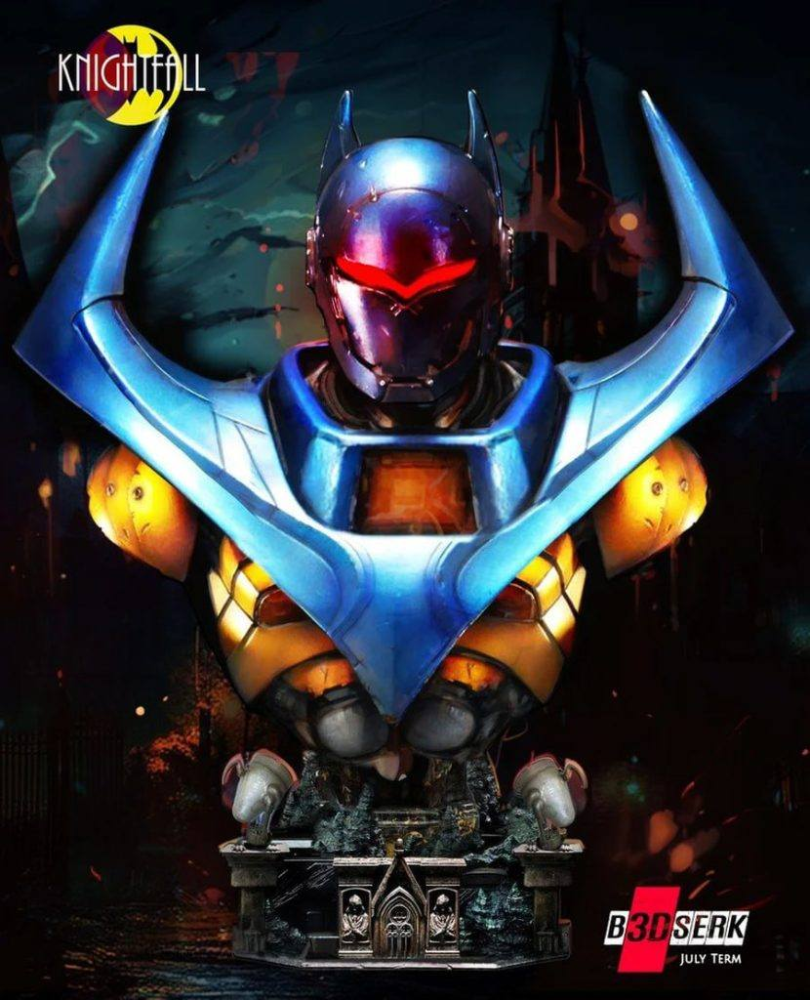

模型分享
12月28日STl图纸文件分享

今天带来六组精致的模型推荐，每一组都展现出独特的设计与高质量细节。首先是《生化危机》中八尺夫人的造型，动态设计和服装纹理细腻，搭配背景更显氛围感；接着是漫威中的行星吞噬者，加里克图斯，充满科幻张力的动态和细节表现极为出色，适合粉丝收藏；第三是经典米奇钥匙造型，融合了迪士尼的童趣与艺术感，是展示与收藏的理想选择。然后是抽象蛇形雕塑，流畅的曲线与艺术化的设计可为场景增添独特魅力，也可单独展示；接着是机甲风格的蝙蝠侠胸像，精密的细节展现了科幻的力量美感；最后是《真人快打》中的蝎子角色，他的动态造型充满战斗张力，为格斗游戏爱好者带来了绝佳的收藏品。





链接:
https://pan.baidu.com/s/1QX9hyYzqEr-iFbbzR6jZ4Q 提取码: bnpd
以上内容仅供个人使用（非商用）
ONLY for PERSONAL (NON-COMMERCIAL) use.
加群获得更多免费模型！